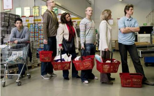

In what concerns the continuous evaluation solving exercises grade during the semester, you should submit until 23:59 of November 22nd
(this exercise will still be available for submission after that deadline, but without couting towards your grade)
[to understand the context of this problem, you should read the class #06 exercise sheet]

A supermarket has C checkouts with a cashier, numbered consecutively from 1 to C. Each of these checkouts has a queue of customers, and at the beginning all the queues are empty.N customers are shopping in this supermarket. Each customer is identified by a name, an arrival time (in seconds) at the checkouts and the number of products to pay for. As soon as a customer arrives at the checkout area to pay, they choose the checkout with the least number of customers in the queue and, in case of a tie, the one where the last customer in the queue has the least number of products. If there is still a tie, they choose the queue with the lowest index number.
A customer with P products takes 10 + P*Ki seconds to be served at checkout i, where Ki is a constant that defines how many seconds it takes the cashier operator of checkout i to process a single product, and 10 is the constant time needed for the customer to pay.
If a customer arrives in the same second that another one or more finishes their shopping, you should process the arriving customer first and only then consider the finishing customers.
Your task is to simulate what happens at the supermarket, printing the list of customers that went to each checkout.
The first line of input contains integer C, the number of checkouts to consider. The second line contains C space separated integers, with the i-th number representing Ki, the speed of the cashier in checkout i.
The third line contains an integer N, representing the number of the customers. N lines follow, each on the format NAMEi ARRIVALi PRODUCTSi indicating respectively the name (a contiguous sequence of no more than 100 letters), the arrival time to the checkout area (an integer) and the number of products (an integer). It is guaranteed that the clients come in strictly increasing order of arrival time.
The output should consiste of C sequences of lines, each one representing one checkout (in increasing index order). Each section should start with a line in the format "Checkout #i: NR_CUSTOMERS" indicating that the checkout with index i attended a certain number of customers. Then follows one line per customer that went to that checkout in the format ". NAME ARRIVALi STARTi DEPARTUREi", indicating the name of the client, when it arrived to the end of the queue, when it arrived to the front of its queue and at what time it left the queue, having payed for its products.
The following limits are guaranteed in all the test cases that will be given to your program:
| 1 ≤ C ≤ 10 | Number of checkouts | |
| 1 ≤ Ki ≤ 100 | Speed of the cashier in checkout i | |
| 1 ≤ N ≤ 100 | Number of customers | |
| 1 ≤ PRODUCTSi ≤ 100 | Number of products of customers | |
| 1 ≤ ARRIVALi ≤ 109 | Arrival time of customers | |
| 1 ≤ DEPARTUREi ≤ 109 | Departure time of customers |
| Example Input | Example Output |
2 3 8 6 Liam 1 5 Olivia 3 2 Noah 4 1 Amelia 20 1 Emma 50 4 Oliver 72 3 |
Checkout #1: 3 . Liam 1 1 26 . Amelia 20 26 39 . Emma 50 50 72 Checkout #2: 3 . Olivia 3 3 29 . Noah 4 29 47 . Oliver 72 72 106 |
Detailed explanation of example input:
Note that on the queues, the number (X) is the number of products of that customer.
| Time | Events | Queues at end of events |
| 1 |
Liam arrives to end of #1 (all checkouts empty, chooses first) Liam is on the front of #1 |
|
| 3 |
Olivia arrives to end of #2 (#2 had less clients than #1) Olivia is on the front of #2 |
|
| 4 |
Noah arrives to end of #2 (#2 last customer had less products than last customer of #1) |
|
| 20 |
Amelia arrives to end of #1 (#1 had less clients than #2) |
|
| 26 |
Liam leaves #1 (started at 1, takes 10+5*K1=25, departs at 1+25=26) Amelia is on the front of #1 |
|
| 29 |
Olivia leaves #2 (started at 3, takes 10+2*K2=26, departs at 3+26=29) Noah is on the front of #2 |
|
| 39 |
Amelia leaves #1 (started at 26, takes 10+1*K1=13, departs at 26+13=39) |
|
| 47 |
Noah leaves #2 (started at 29, takes 10+1*K2=18, departs at 29+18=47) |
|
| 50 |
Emma arrives to end #1 (all checkouts empty, chooses first) Emma is on the front of #1 |
|
| 72 |
Oliver arrives to end of #2 (#2 had less clients than #1 | process arrivals before departures) Oliver is on the front of #2 Emma leaves #1 (started at 50, takes 10+4*K1=22, departs at 50+22=72) |
|
| 106 |
Oliver leaves #2 (started at 72, takes 10+3*K2=34, departs at 72+34=106) |
|